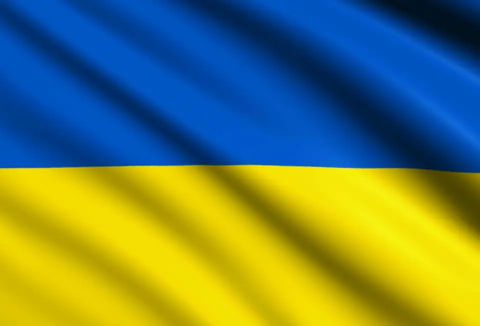
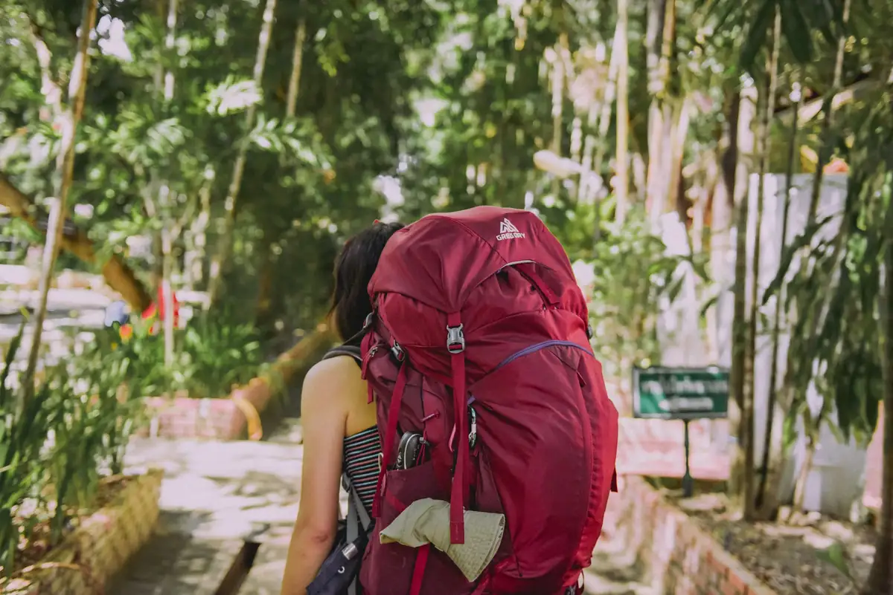
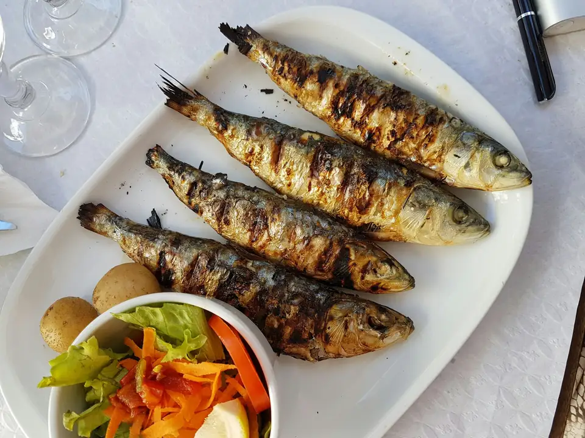
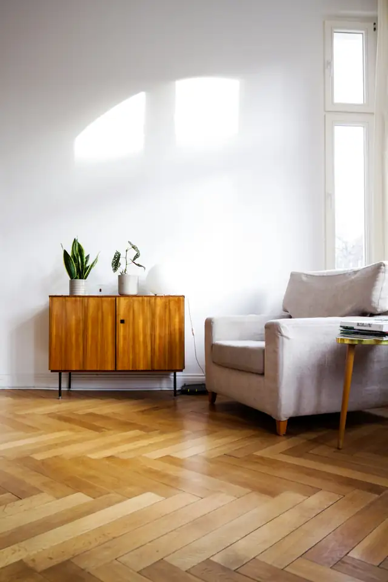
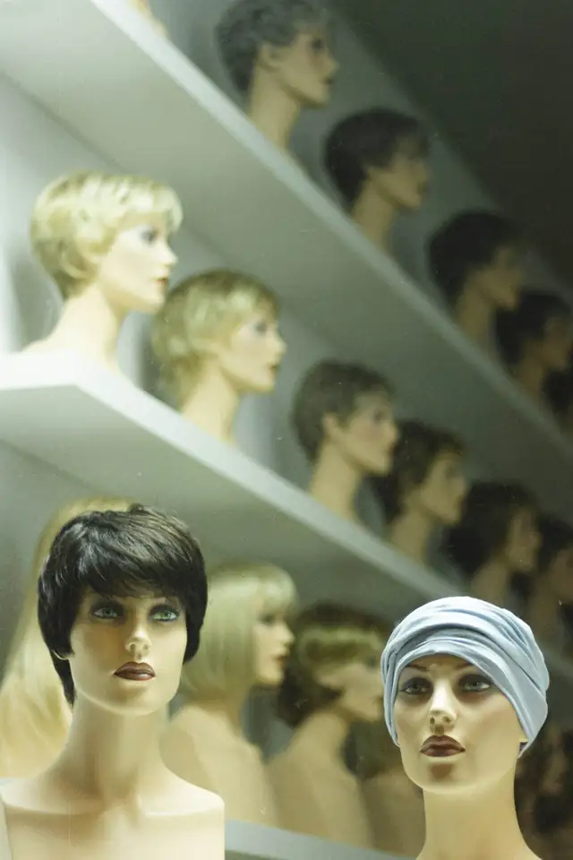
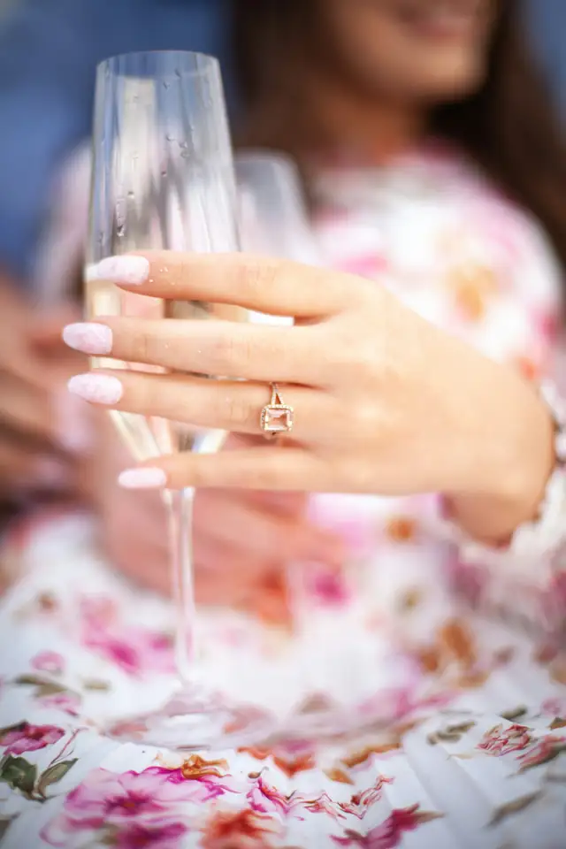
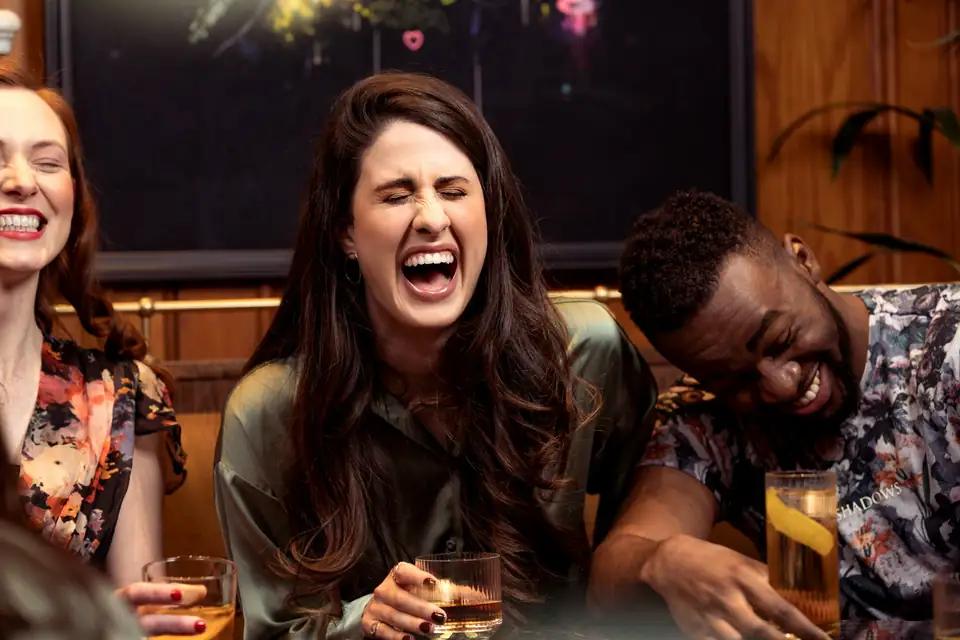
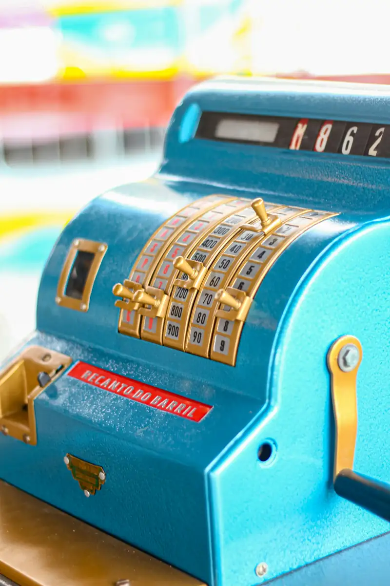
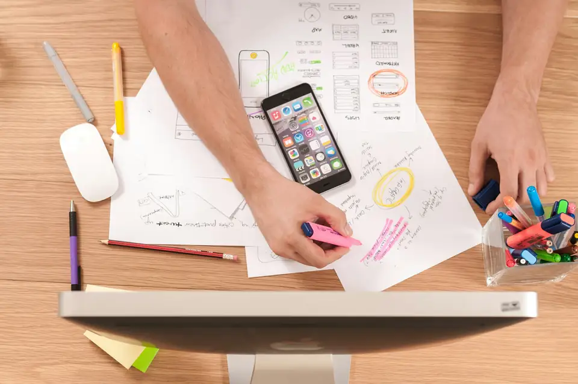

נכנסת מהר לעומק
לומדת תחומים חדשים במהירות, מפנימה את השפה וההקשר, וכותבת תוכן מבוסס וסמכותי.
אני לומדת עולמות תוכן חדשים במהירות, חוקרת אותם לעומק, ומוצאת את הזווית שתגרום לאנשים לעצור ולקרוא. מכתבות תחקיר ועד תוכן מוצר טכני, מראיונות אישיים ועד סטוריטלינג למותגים — אני מתאימה את הקול לנושא ולקהל.
החוזקות שלי הן הדרך שבה אני ניגשת לעבודה: לומדת, בודקת, מקשיבה ומחברת בין מידע, אנשים ורעיונות.
לומדת תחומים חדשים במהירות, מפנימה את השפה וההקשר, וכותבת תוכן מבוסס וסמכותי.
מצליבה מידע ובוחנת אמינות ודיוק — מתוך ערכים ומיומנויות שפיתחתי באקדמיה ובעבודת חקר הונאות.
גם בנושא מוכר אני מחפשת חיבור או נקודת מבט שיהפכו אותו לסיפור חדש שמדליק את הקורא.
יוצרת נינוחות ואמון כבר בשיחה הראשונה, ומקשיבה ושואלת כדי לעזור לאנשים לגלות דברים חדשים על עצמם ועל העבודה שלהם.
מאפיינת קהלים ופרסונות, ומתאימה קול ושפה לאדם, למותג ולמי שקורא.
העבודות כאן נבחרו כדי להראות איך מחקר, כתיבה, ראיונות והתאמת קול פועלים יחד — בתחומים ובפורמטים שונים.

תחקיר שמחבר בין תרבות הקומדיה הפוסט־סובייטית, KVN, אולפני קברטל95 והמסלול הפוליטי של זלנסקי.
לקריאת הכתבה ↗
במשך חודשים חקרתי וכתבתי מדריכי תיירות לכל 39 היעדים של סחבוק, לקהל צעיר מדור ה־Z. המחקר המעמיק והיסודי שלי כלל אטרקציות, מסעדות, ברים, שווקים, תחבורה ועוד. מתוכו גיבשתי לכל יעד את הדופק המקומי וכתבתי מדריכים שמרגישים כמו המלצה מחבר שמכיר את המקום — בשפה צעירה, הומוריסטית ושכונתית.
לדוגמה: מדריך רודוס ↗
למותג בתחום האזרחות הפורטוגלית הצעתי שער תוכן תרבותי: המטבח המקומי, מקורותיו והסיפורים שמאחוריו.
לכתבה ↗
במקום עוד תוכן מוצרי, הפכתי רצפת פרקט לנקודת כניסה לסיפור היסטורי — מתוך בקשה פתוחה לכתוב משהו מרענן.
לכתבה ↗
ראיון עם דמות מוכרת, שמציג את רונית כאישה וכאשת מקצוע ומחבר את הסיפור האישי לעולם המותג. חלק מליווי תוכן מתמשך.
לראיון ↗
ליווי תוכן למותג תכשיטי יוקרה ישראלי שפנה לנשים בריטיות בוגרות. אפיינתי פרסונות וקול מותגי, וכתבתי סיפורים וקופי באנגלית — מקונספטים סיפוריים ועד קופי אלגנטי ומאופק ליהלומי Pink Diamonds.
לדוגמת סיפור מותגי ↗הסיפורים בגוף ראשון נכתבו כקונספטים שיווקיים מתוך פרסונה, ולא כעדויות של לקוחות אמיתיות. דוגמת הקופי ל־Pink Diamonds ↗פוסט שנכתב בקולו של מותג יצרן מזון, שהמליץ על בר חדש המגיש את הדים סאם שלו. דוגמה להתאמת הקול והמסר למותג שממליץ על לקוח שלו.
לפוסט בפייסבוק ↗הכתבה שאליה הפוסט הוביל: Time Out ↗הלקוח הביא ארבע־חמש שורות ראשוניות באנגלית; פיתחתי מהן תסריט מלא לסרטון, עם רצף ומסר שאפשר להעביר בווידאו.
לסרטון בפייסבוק ↗
ראיון שנבנה כסיפור חיים, דרך שפה, זהות, קהלים ומסלול מקצועי בין ישראל, רוסיה ואוקראינה.
לראיון ↗
אחרי כתבה מוצלחת עבור ״ילדי הקומדיה״, קיבלתי את משבצת המלצות הסטנדאפ השבועית בבלייזר און ליין.
לכתבה ב־ynet ↗הקרדיט המקורי: נוי טמרקין (שם קודם)סקירה שמפענחת איך מופע מחבר סיפור חיים, סטנדאפ ומדע — ומה הופך את המבנה שלו לחוויה עשירה.
לסקירה ↗
כתבה ארוכה שמציגה את עולם הקופות דרך חוויית השירות, התוכנה והצרכים של בעלי עסקים.
לכתבה בישראל היום ↗
שתי כתבות על פתרונות הקופה של AP: תוכן לאתר החברה וכתבה שפורסמה ברשת 13.
לכתבה באתר AP ↗לכתבה ברשת 13 ↗
במסגרת פרויקט תוכן מתמשך הכנתי מאמרי SEO לאתרים בתחומי הנדל״ן, רפואת השיניים והטיפוח והאסתטיקה. העבודה כללה פיתוח זווית, מחקר, שילוב ביטויי SEO, כתיבת תגיות מטא ובחירת תמונות. באחד ממאמרי הנדל״ן חיברתי בין סביבת למידה לילדים לבין מסר של משפחתיות; בדוגמה נוספת עיביתי וערכתי טקסט קיים והפכתי אותו לקוהרנטי ומלא יותר.
״גם בעולמות התוכן הרוויים ביותר, שפע של סיפורים מרתקים מחכים להתגלות.״
בכל פרויקט אני מוצאת את נקודת הכניסה שהופכת מידע לסיפור שאנשים רוצים להמשיך לקרוא.
אלה יכולות מקצועיות נוספות שאפשר להיעזר בהן לפי הצורך.
במגוון פורמטים, קולות וקהלים.
מהבריף ועד להעלאת התוכן לאתר.